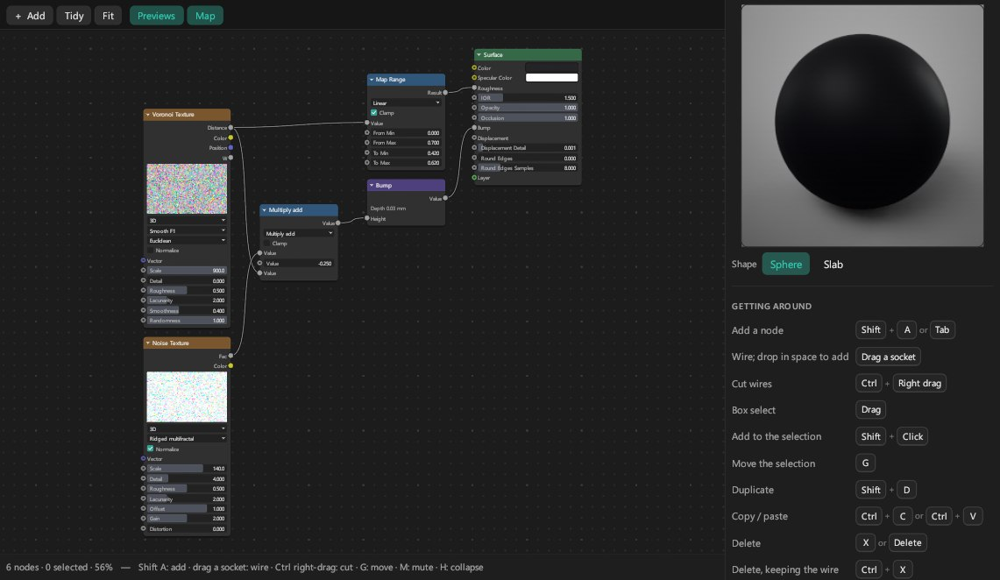
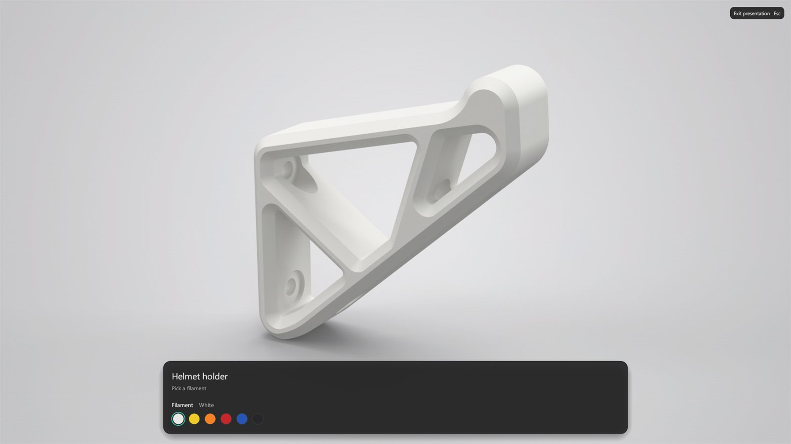
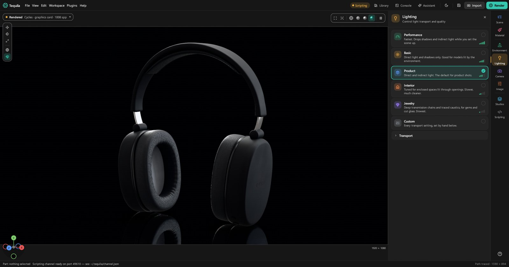

The whole toolbox.
For building materials from scratch, laying out artwork, selling a product in every option, compositing, big CAD assemblies and automating the lot. Each lesson stands on its own.
1. Build materials from nodes
Every material can also be a node graph: textures, patterns, maths and colour feeding the material's settings. Select a part and press Edit graph… on the Material tab. The graph opens in a window of its own, which you can put on a second screen; it reopens where you left it.

- The Surface node is the material. Its inputs are the material's settings; wire anything into them.
- Add a node with Shift+A or Tab, right-click › Add…, or by dropping a wire on empty canvas (then only nodes that fit the wire are offered). Type to search: "multiply" finds the multiply operation of Math, Vector Math and Mix.
- The families: Input, Texture, Pattern (the 17 patterns, plus FDM Layer Lines for 3D prints), Color, Converter, Vector, Surface and Layout.
- Surface nodes do more than colour: Curvature for worn edges, Occlusion for dirt in crevices, Bubbles inside glass and liquid, Fuzz for grown fibres, and Shader, Mix Shader and Add Shader to layer whole materials.
- Wires: drag from a socket; drag off a connected input to pick its wire up; Ctrl+right-drag cuts wires; drop a node on a wire to put it in between.
- Look at one node with Ctrl+Shift+click (or Solo in the sidebar): the viewport shows only its output on the model. Click again for its next output; End solo stops.
- Keep it tidy: Ctrl+J wraps nodes in a frame, M mutes, H collapses, Tidy lays everything out in columns, Home fits it in view.
Good to know. The graph only offers pictures already in the project. To use a new one, put it on a setting with the Material tab's Image… first; then any Image node can switch to it. An edit that would make a loop, or join sockets of different kinds, is refused with a note saying why.
2. Lay out UVs
A UV layout is a part's surface laid out flat: it's what textures and labels with On UV map follow. Open the editor with View › UV editor, Workspace › UV layout (the editor beside the Material tab), or a label's UV editor button. A part with no layout offers Unwrap.

- Tools: Select (V), Move (W), Rotate (E), Scale (R), Measure (M). 1–4 choose what a click picks: labels, islands, edges or vertices.
- Seams and islands: Cut (C), Stitch (S), Pin (P), Re-flatten, Pack (Ctrl+P), Straighten, Even size.
- Seeing problems: Stretch shows a heat map of distortion; Checker on the part puts a checker on the model in the viewport (never in a render).
- The side panels go further: Align, Arrange, Texel density, Islands (with pack options and UV sets), Unwrap methods, Shape tools such as Relax, and Symmetry.
- Export layout writes a PNG or SVG of the layout to draw artwork over. ? lists every key.
3. Dress a whole assembly by rules
An assembly of five hundred parts shouldn't need five hundred drops. A template is a list of rules, each giving matching parts a material; the first rule that matches a part decides it.
- Put the materials you'll need into the project first (drop them on any part).
- Open Material templates at the bottom of the Material tab and press + Template.
- Add rules with + Rule. Each matches by Part name or Material name (
bolt*:*is any run of letters,?any one), by Colour within a tolerance, or by a Metadata field such aslayer = HARDWARE, and then gets a material. - Check the preview. It says how many parts would change and lists each with its material now and after.
- Press Apply to N parts. It's one undo step.
Tip. Studio presets can carry rules too. Applying one offers Dress it with the studio's materials, so a house style lights and dresses a new product.
4. Configurators, presentations and the web
A configurator turns colourways, alternative parts and saved shots into the choices a customer makes. You need at least one of: a set of material variants (Colourways), two Model sets, or two Studios.
- Model sets are which parts show: a version with the handle and one without. On the Studios tab, select the parts and press + Set from selection; Tick Always on a set that should show whichever set is chosen, such as the body every version shares.
- Press Build a configurator at the bottom of the Studios tab (or choose Workspace › Configurator).
- Options: each option is variants, model sets or Studios, shown as Swatches, Buttons or a List. Name the choices and set their swatch colours.
- Rules: "when this choice, rule out or require that one". It counts how many combinations remain valid.
- Layout: a title, a subtitle, and the picker on the left, right or bottom.
- Try it: the live picker. From here, Present full screen, Render all N… (one picture per valid combination) or Export for the web….

File › Export for the web… writes a folder with a page that opens in any browser and loads nothing from anywhere: Live 3D, Photos of every combination, or both. The Features page has a live one to try.
5. Passes, layers and relighting
- Render passes (under File, for EXR and PSD) write the picture's ingredients as layers: diffuse, reflection, refraction, lighting, depth, normals, position, albedo, masks by object and material, and more. Cycles leaves out caustics, ambient occlusion, shadow and labels.
- Render layers: + Layer from selection renders those parts on their own, as an extra picture.
- Relight: tick Keep light groups for relighting. After the render, a Relight section has a strength and tint for each group (each scene light's Light layer, the environment, glowing materials) and Save relit image. No re-rendering.
- Region: Render part of the image only re-renders one rectangle, drawn in orange on the frame.
Good to know. Render layers and regions always render in Tequila's own renderer, whatever the project is set to.
6. Light transport and caustics
The Lighting tab decides how light travels, which is what you trade against speed.
- Performance drops shadows and bounced light while you set up; Basic is direct light and shadows; Product (the default) adds bounced light; Interior is for spaces lit through openings; Jewelry follows light deep through gems and cut glass, with caustics.
- Transport sets it all by hand: Ray bounces, Transmission bounces (counted apart, so glass gets enough without slowing everything), global illumination, shadows, and Caustics: Off, Photons, or Manifold (for lamps). Changing any of these switches to Custom.
- Caustics need solid glass: Glass (Solid), Liquid or Gem. A thin pane passes light straight through.

Which renderer: new projects render with Cycles (graphics card). Tequila's own renderer also does spectral rendering, so gems and dispersive glass split light into colours; the Render window's Spectral setting decides when.
7. Ray visibility and cutaways
- Visible to: select a part, and choose which rays see it: Camera, Reflections, Light it bounces, Through glass, Casts shadows. A card the camera can't see but reflections can is a hidden reflector, as in a real studio. Holdout cuts a part out of the picture for compositing.
- Light linking: select a scene light; Light linking and Shadow linking choose which parts it lights and which cast its shadow.
- Cutaways: Add › Cutaway (Plane, Box, Sphere or Cylinder) cuts the model open to show what's inside. Move it with the gizmo; select it and its settings are on the Material tab, including Cut face: the part's own material or a flat colour.
8. Big CAD assemblies
- Tessellation: right-click a CAD model › Tessellation: Draft, Medium, High or Ultra, for how finely curved surfaces are divided.
- Improve model… re-divides CAD surfaces, subdivides meshes, and re-shades them smooth with an angle above which edges stay sharp.
- A new version from CAD: File › Reload model from file, or right-click › Update from another file…. Materials, labels and names are kept, parts are matched by name, new parts are added, and parts no longer there are hidden. The Model updated window lists both and can delete the hidden ones.
- Metadata: the Metadata section shows each part's fields from the CAD file. Click a field's magnifier to select every part with that value, add your own fields, or Export CSV for a parts list.
- Layers: CAD files with layers show a Layers section to hide or select them.
Tip. A part renamed in CAD looks like one part removed and another added. Rename it in Tequila too, or re-dress it, after an update.
9. Colour management
Tequila renders in ACEScg, a wide-gamut space, and the colours you pick are shown as they will render. For a studio pipeline, Colour management on the Image tab loads an OCIO config: give it the path to a config.ocio and pick its Display and View. Use the built-in transform goes back to Tequila's own tone maps.
10. Render on other computers
- On each other computer, run
tequila-cli --worker --token YOUR-SECRET. It listens on port 7740. - In the Render window's Network rendering, type the same token (eight characters or more) and add each computer's address.
- Press Render shot, or All configurations for a configurator. Finished renders come back into the list.
Good to know. Projects travel unencrypted, so use a network you trust. The token isn't saved; TEQUILA_FARM_TOKEN can supply it. Render nodes write PNG or JPEG.
11. Scripts, the console and the command line
The console
Open it with Console in the toolbar or `. Type help for the commands: select, frame, render, apply, look, show and hide, and more. Tab completes and the arrows walk the history. Run script… runs a file of commands as one undo step, and takes it all back if a line fails.
Python
import tequila
with tequila.open('product.step') as fs:
fs.library.apply('Aluminium Anodised Blue', *fs.parts())
fs.render('product.png', width=1920, height=1080, samples=256)tequila.open() runs Tequila without a window; tequila.connect() drives the one you have open, where every edit a script makes is one step to undo. The Scripting tab shows the channel's address and a log of what scripts did.
The command line
tequila-cli -i product.tequila -o product.png -w 1920 -h 1080 -s 256 --engine cycles
tequila-cli -i product.tequila --all-studios -o "shots {view}.png"
tequila-cli -i product.tequila --export-web site --photostequila-cli --help lists everything: wireframes, studio presets, every configuration, glTF, USD and spin viewers.
AI apps
The same channel is how AI apps drive Tequila over MCP. Connect an AI sets them up; the Scripting tab's Copy instructions for an AI assistant gives any other one what it needs.
The scripting guide and the command reference have the rest.
12. Plugins
Plugins add commands, panels and material packs. Every plugin starts turned off.
- Plugins › Manage plugins… opens the Plugins window: Install from a ZIP…, Open the folder, and the switch on each plugin to turn it on. A plugin with code asks before it runs.
- Plugins with code need Python 3; material packs need nothing.
- To write one, type a name and press Make it from the template, then edit the files it makes. Plugins can react when the selection changes, a project is saved, opened or imported, or a render finishes.
The plugins guide explains the rest, and the repository's plugins/examples folder has working ones to start from.
Built something with it? Show it on the Discord.
Join the Discord